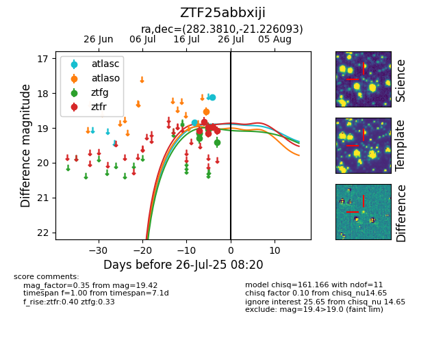

Target ZTF25abbxiji at 2025-07-26 08:20, see:
FINK: fink-portal.org/ZTF25abbxiji
Lasair: lasair-ztf.lsst.ac.uk/objects/ZTF25abbxiji
ALeRCE: alerce.online/object/ZTF25abbxiji
alt names
ZTF25abbxiji (ztf,fink)
coordinates:
equatorial (ra, dec) = (282.3810,-21.22609)
galactic (l, b) = (13.6679,-9.10016)
photometry
last atlasc=18.12, atlaso=18.53, ztfg=19.42, ztfr=19.08
2 atlasc, 1 atlaso, 7 ztfg, 6 ztfr detections
